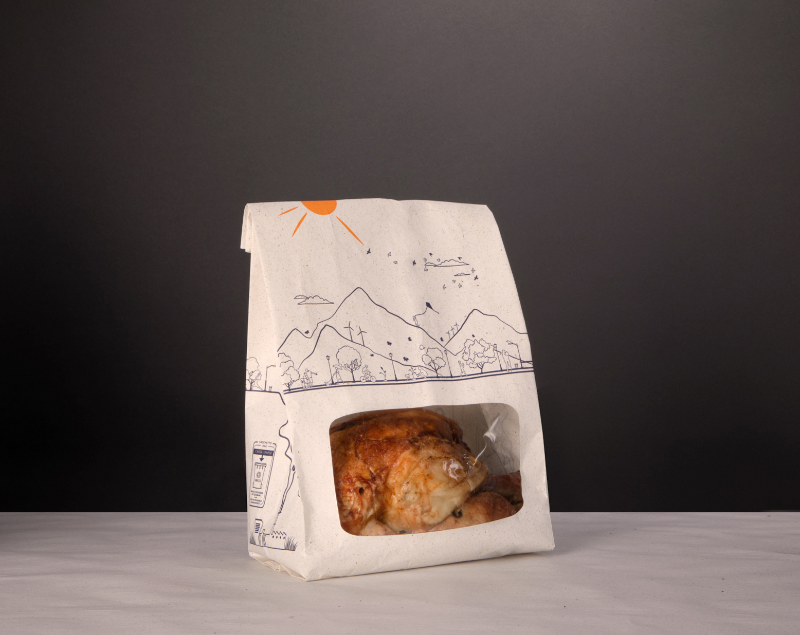

Зрелая матрица реальных европейских и мировых решений взамен упаковки из 100% Virgin Plastic
В холодном сегменте уже используется 100% переработанный пластик (при этом обычный холодный лоток Faerch K 2182-1G APET #2182015004 ограничен +70 °C и деформируется на горячей витрине). Для зоны Profi Grill / Fiesta (запекание 180–220 °C и горячая выкладка 65–85 °C до 6 часов) мы заменяем базовый эталон из 100% первичного полипропилена (Faerch P 2226-1C #2226014004, 26.29 г Virgin PP, предел +121 °C, цена: розница ~€0.125/шт | опт B2B ~€0.078/шт) на верифицированный портфель серийных решений ЕС и США (TRL 9) с подлинными PDF-сертификатами и расчётом розничных и оптовых цен по формуле: Общий пластик − Вторсырьё (Recycled Content) = Первичный пластик (Virgin Plastic)
Термостойкость по PDF TDS
Разделение режимов: горячая витрина 65–85 °C (до 6 ч) и прямое запекание в духовке до 200–220 °C (NatureFlex™ NVO, Hostaphan® RHST, Faerch CPET).
Стойкость на горячей полке
Отвод лишнего пара (Performance Ventilation / Self-Venting) сохраняет хрустящую корочку курицы-гриль и долек на тепловой витрине.
Жиробарьер по нормам ЕС
Барьерные слои NatureFlex™ NVO, Koehler NexPlus® OGR (KIT 7 без PFAS/акрилатов) и PET-лайнеры удерживают кипящий жир без волокон на еде.
Визуальный обзор товара
Кристально прозрачное окно из целлюлозы NatureFlex™ NVO, антифог-полипропилена ToGo!® или термостойкого ПЭТ (Dubl View® / Hostaphan®).
Прозрачная экономика (L и S/M)
Для каждого решения указана как розничная цена (от 1 короба), так и контрактный крупный опт B2B для сети Profi (в допуске +9…+12.8% к базе и до -25% на S/M).
Подлинные сертификаты
В проект встроены 13 оригинальных заводских PDF (BRCGS AA+ SACMA, DNV FSC, Intertek 70% PCR Mitsubishi, Koehler NexPlus, Novolex, Faerch).
1. Флагманские пакеты с окном для горячей витрины (Размеры L и S/M): Био-целлюлоза SACMA Gaia (0% пластика) и Серийный крафт Bagcraft® / Koehler NexPlus®

SACMA S.p.A. B.Life® GAIA × Futamura NatureFlex™ 30 NVO (Термо-пакет с окном — Размеры L и S/M, Италия)
Реально производимый в Европе (SACMA S.p.A., Адро, Италия, серт. BRCGS Issue 7 Grade AA+ № 72228-2010-ABRC и DNV FSC-COC-000967) запатентованный пакет для горячей курицы-гриль и кулинарии. Сочетает бумагу FSC® (с волокнами травы / крафт) и внутренний термосвариваемый барьер + прозрачное окно из древесной целлюлозной плёнки Futamura NatureFlex™ 30 NVO (выдерживает духовку до 200 °C / 30 мин, СВЧ, горячую полку и заморозку до -40 °C). 0.00 г пластика (-100% Virgin Plastic), перерабатывается в макулатуре (PAP 22 Aticelca®). Цена за 1 шт: Розница (1 короб 500 шт) — ~€0.145/шт (€72.50/короб L) и ~€0.095/шт (S/M) | Крупный опт B2B (от 25 000 шт) — ~€0.088/шт (L, +12.8% к базе) и ~€0.058/шт (S/M, -25% дешевле лотка!).
- Внешний каркас (FSC® Certified Paper): Первичная и переработанная целлюлоза FSC® (DNV-COC-000967) с добавлением волокон луговой травы (Grass Paper) — высокая жёсткость в форматах L (целая курица) и S/M (порции)
- Внутренний лайнер и окно (Futamura NatureFlex™ 30 NVO, 30 мкм): Регенерированная целлюлоза из древесной массы (96% bio-based carbon, DIN CERTCO 9S0002), двухсторонняя термосварка — 100% защита от протечек куриного сока и горячего жира
- Температурный допуск (по спецификации Futamura & SACMA): Разогрев в духовке до 200 °C (до 30 мин), СВЧ-печь, горячая витрина 65–85 °C и шоковая заморозка до -40 °C
- Цена за единицу (Розница vs Опт B2B для сети Profi): Розница (1–5 коробов по 500 шт): ~€0.145/шт (€72.50/короб L) и ~€0.095/шт (€47.50/короб S/M) • Крупный опт B2B (от 25 000–50 000+ шт): ~€0.088/шт (€44.00/короб L, +12.8% к оптовой базе €0.078) и ~€0.058/шт (€29.00/короб S/M, на 25% дешевле лотка) + 0 € налога на пластик!
Сравнение с базовой упаковкой из 100% Virgin Plastic (5-угольный график)
Паспорт сравнения (TDS)
Наведите на кнопку, чтобы сравнить показатели

Bagcraft® EcoCraft® ToGo! (#301051 L / #301011 S/M / #301056 Paper-PET) & Бюджетная моно-бумага ЕС Koehler NexPlus® OGR / Mondi
Готовые крупносерийные пакеты для тепловой витрины 65–85 °C из заводских PDF-каталогов Novolex / Bagcraft® (док. B_PG_1093_0922 и NVX-12832026: #301051 для целой курицы L, #301011 / #301043 для крылышек S/M и #301056 Paper/PET «PET film ideal for hot food applications»), а также европейская бюджетная моно-бумажная опция (Вариант 3) из без-PFAS жиростойкой бумаги Koehler NexPlus® OGR (KIT Level 7) / Mondi FunctionalBarrier Paper (заводы в Австрии, Словакии и Бухаресте) с окном из прозрачной бумаги Ahlstrom Cristal™. Цена за 1 шт: Розница (1 короб) — #301051 L: $0.176/шт (~€0.162/шт, $43.99/короб 250 шт) и #301011 S/M: $0.093/шт (~€0.085/шт, $46.49/короб 500 шт) | Крупный опт B2B — #301051 L: ~€0.086/шт ($0.094/шт, +10.2% к базе), #301011 S/M: ~€0.052/шт, Моно-бумага Koehler/Mondi: ~€0.042–€0.055/шт (-30% дешевле пластикового лотка!).
- Размер L — Целая курица (Bagcraft® #301051, UPC 10072181010519): 8.75 × 6.00 × 10.75 in. (222.3 × 152.4 × 273.1 мм) • 250 шт/короб • Вес короба по PDF: 15.83 lbs (брутто 28.72 г/шт; инженерная оценка тонкого окна Anti-Fog PP: ~1.80–2.20 г пластика = -91.6% к базе)
- Размер S/M — Крылышки и дольки (#301011 / #301043 / #301056 Paper-PET): #301011 (127 × 76 × 244 мм, 500 шт/короб, 13.50 lbs = 12.25 г/шт, окно ~1.45 г = -94.5% пластика); #301056 / #300091 (док. NVX-12832026: бумага + термостойкое ПЭТ-окно для горячих блюд)
- Бюджетный моно-бумажный вариант ЕС (Koehler NexPlus® OGR & Mondi FunctionalBarrier): Жиростойкость KIT Level 7 (док. Koehler от 16.03.2023) 100% без фторполимеров PFAS и без акрилатов + матовое окно из каландрированной целлюлозы Ahlstrom Cristal™ для сухих горячих закусок (картофель wedges, стрипсы)
- Цена за единицу (Розница 1 короб vs Крупный опт B2B): Розница: #301051 L (250 шт) = $43.99/короб ($0.176/шт ≈ €0.162/шт); #301011 S/M (500 шт) = $46.49/короб ($0.093/шт ≈ €0.085/шт); Моно-бумага = ~€0.075/шт • Крупный опт B2B (от 50 000+ шт): #301051 L = ~€0.086/шт ($0.094/шт, $23.50/короб, +10.2% к базе); #301011 S/M = ~€0.052/шт ($0.057/шт); Моно-бумага Koehler/Mondi = ~€0.042–€0.055/шт (+6% к простой бумаге и на 30% дешевле лотка PP!)
Сравнение с базовой упаковкой из 100% Virgin Plastic (5-угольный график)
Паспорт сравнения (TDS)
Наведите на кнопку, чтобы сравнить показатели
2. Решения для прямого запекания в духовке до +220 °C: Термо-пакеты Mitsubishi Hostaphan® RHST / 70% PCR (Sirane Sira-Cook™) и Лоток Faerch Evolve CPET

Mitsubishi Hostaphan® RHST / RPSP PL (220 °C) & Hostaphan® 70% PCR rPET (Конвертация Sirane Sira-Cook™ Польша / ЕС)
Технический бенчмарк на случай, если технологам Profi требуется запекать курицу или полуфабрикаты прямо в пакете в конвекционной печи. Доказано 4 подлинными немецкими PDF-документами Mitsubishi Polyester Film GmbH (Висбаден, ФРГ): плёнка Hostaphan® RHST (21–42 г/м², без сурьмы) выдерживает до +220 °C в течение 120 минут, Hostaphan® RPSP PL обеспечивает авто-сброс пара (Self-Venting) при -40…+220 °C, а сертификат Intertek № RC-20260727-01(b) (ISO 14021:2016) официально подтверждает 70% Post-Consumer Recycled (PCR) в линейке Hostaphan® rPET (и 30% PCR в ядре коэкструзии PCR PR3F). Готовые пакеты в регионе CEE выпускает завод Sirane Group / KM Packaging (Польша, линейка Sira-Cook™). Цена за 1 шт: Розница (1 короб 500 шт) — ~€0.140/шт (€70.00/короб) | Крупный опт B2B (от 50 000+ шт) — ~€0.085/шт (€42.50/короб, +9.0% к базе €0.078).
- TDS Hostaphan® RHST (Edition 06/23): Двуосноориентированная коэкструдированная ПЭТ-плёнка для пакетов запекания (15–30 мкм, 21–42 г/м², прочность 230–270 Н/мм², Haze 2%) • Допуск: до +220 °C до 120 минут (предупреждение TDS стр. 3: избегать нагрева >250 °C и открытых ТЭНов)
- TDS Hostaphan® RPSP PL (Edition 06/23): Прозрачная плёнка 25 мкм (35 г/м²) с функцией Self-Venting (самостоятельный отвод пара при разогреве) и лёгким открытием Easy-Peel, диапазон от -40 °C до +220 °C (30 мин)
- Сертификат Intertek RC-20260727-01(b) & TDS Hostaphan® PCR PR3F: Подтверждено 70% PCR rPET (ISO 14021:2016) для артикулов 7CDA, 7CRN, 7RCD, 7RD, 7RN, PR7N и 30% PCR в центральном слое (PCR PR3F) с первичными внешними слоями (EU 1935/2004 и 10/2011)
- Цена за единицу (Розница vs Опт B2B) и баланс пластика (~12.0 г): Розница (1 короб 500 шт): ~€0.140/шт (€70.00/короб) • Крупный опт B2B (от 50 000+ шт с завода Sirane Польша): ~€0.085/шт (€42.50/короб, +9.0% к базовому опту €0.078) • При 70% PCR остаётся всего 3.60 г Virgin Plastic (-86.3% к базе 26.29 г)
Сравнение с базовой упаковкой из 100% Virgin Plastic (5-угольный график)
Паспорт сравнения (TDS)
Наведите на кнопку, чтобы сравнить показатели

Faerch C 2200-1L Evolve CPET (#2200012097, -40…+220 °C) против Базы PP (#2226014004, +121 °C) и Холодного APET (#2182015004, +70 °C)
Эталонное сравнение по 3 подлинным датским техпаспортам Faerch A/S: 1) Faerch C 2200-1L Evolve CPET (#2200012097) имеет массу корпуса 21.38 г ± 10% (на -18.7% легче базы уже до учёта PCR!) и выдерживает от -40 °C до +220 °C (Dual-Ovenable); 2) Базовый Faerch P 2226-1C PP (#2226014004) весит 26.29 г из 100% первичного PP и ограничен +121 °C (Microwave only); 3) Холодный Faerch K 2182-1G Clear APET (#2182015004, 21.48 г) ограничен +70 °C (Not ovenable), что документально объясняет, почему обычный холодный rPET нельзя ставить на горячую витрину Profi! Цена за 1 шт: CPET #2200012097 — Розница (1 короб 544 шт): ~€0.155/шт (€84.30/короб) | Опт B2B (паллета): ~€0.091/шт (€49.50/короб, +16.5%) против Базы PP #2226014004 — Розница: ~€0.125/шт (€60.00/короб 480 шт) | Опт B2B: ~€0.078/шт (€37.40/короб).
- Кандидат для духовки (Faerch C 2200-1L Evolve CPET #2200012097, TDS от 09.01.2023): 220.2 × 165.2 × 45.0 мм • Объём 1126 мл • 550 мкм • Масса корпуса: 21.38 г ± 10% • Рецепт 6811 • -40 °C…+220 °C (Dual ovenable) • 544–570 шт/короб
- Честная граница доказательств по PCR % (стр. 3 TDS #2200012097): В публичном TDS Faerch указывает, что точная доля rPET колеблется от года к году и выдаётся по запросу (SKU point PCR = UNKNOWN в публичном TDS). При гарантированном полу линейки Evolve (40% rPET) Virgin Plastic = 12.83 г (-51.2%); при потолке платформы Evolve (до 70% PCR, релиз Faerch 20.11.2024) = 6.41 г (-75.6%)
- Базовый эталон (Faerch P 2226-1C Clear PP #2226014004, TDS от 20.02.2026) и Холодный APET (#2182015004): База PP: 226.5 × 177.8 × 40.0 мм • 1084 мл • 26.29 г ± 10% (100% prime PP = 0% PCR, предел +121 °C); Холодный APET #2182015004: 21.48 г, предел +70 °C (Not ovenable)
- Цена за единицу (Розница 1 короб vs Опт B2B паллета): Faerch CPET #2200012097: Розница = ~€0.155/шт (€84.30/короб 544 шт) | Крупный опт B2B (паллета 6 528–11 400 шт) = ~€0.091/шт (€49.50/короб, +16.5% к базе) • База PP #2226014004: Розница = ~€0.125/шт (€60.00/короб 480 шт) | Крупный опт B2B (паллета 11 520 шт) = ~€0.078/шт (€37.40/короб)
Сравнение с базовой упаковкой из 100% Virgin Plastic (5-угольный график)
Паспорт сравнения (TDS)
Наведите на кнопку, чтобы сравнить показатели
Матрица инженерного выбора для сети Profi (по подлинным заводским PDF-сертификатам и TDS)
| Критерий оценки (по PDF TDS) | 🔴 Публичная База 100% Virgin PP (Faerch #2226014004) & Холодный APET (#2182015004) | 🏆 1. Флагман ЕС: SACMA B.Life® GAIA × Futamura NatureFlex™ 30 NVO | 🥇 2. Витрина & Моно-Бумага: Bagcraft® ToGo! (#301051 / #301011) & Koehler NexPlus® OGR | 🔥 3. Бенчмарки Духовки 220°C: Hostaphan® RHST / 70% PCR & Лоток Faerch CPET (#2200012097) |
|---|---|---|---|---|
| Производитель, Страна и Документ | Faerch A/S (Дания) PP #2226014004 (EAN 5701022905797) APET #2182015004 (EAN 5703969013399) |
SACMA S.p.A. (Италия) + Futamura (UK/EU) BRCGS Issue 7 Grade AA+ & DNV FSC-COC-000967 |
Novolex Bagcraft® (США) & Koehler Paper (ФРГ) / Mondi (Австрия/Румыния) B_PG_1093_0922, NVX-12832026 & NexPlus OGR |
Mitsubishi Polyester Film (ФРГ) / Sirane (Польша) & Faerch A/S (Дания) Intertek RC-20260727-01(b) & TDS #2200012097 |
| Сценарий в сети Profi Romania | Холодный APET плавится при >70 °C; Базовый PP ограничен +121 °C (СВЧ) | Флагман (Размеры L и S/M): Горячая витрина 65–85 °C + разогрев в печи до 200 °C и СВЧ | Быстрый Drop-in (L и S/M): Горячая витрина после гриля (65–85 °C до 6 ч) и сухие горячие закуски | Прямое запекание в печи (до 220 °C): Если курица или блюдо запекается прямо в упаковке |
| Общая масса и структура | 26.29 г ± 10% (PP #2226014004) 21.48 г ± 10% (APET #2182015004) |
~14–24 г (S/M и L): Бумага FSC® + термосвариваемый био-лайнер и окно NatureFlex™ 30 NVO (30 мкм) | L (#301051): 28.72 г брутто (~2.20 г окно PP) S/M (#301011): 12.25 г брутто (~1.45 г окно) NexPlus® OGR: 100% бумага (0 г пластика) |
Пакет Hostaphan® / Sira-Cook™: ~12.0 г (21–42 г/м²) Лоток Faerch CPET: 21.38 г ± 10% (-18.7% легче PP) |
| Расчёт Virgin Plastic (Общий пластик − Вторсырьё) |
26.29 г − 0 г = 26.29 г Virgin (100% первичный PP) |
0.00 г пластика = 0.00 г Virgin (-100% пластика; 100% растительная целлюлоза) |
Bagcraft L: ~2.20 г (-91.6%) Bagcraft S/M: ~1.45 г (-94.5%) Koehler / Mondi: 0.00 г (-100%) |
Hostaphan (70% PCR Intertek): 12 − 8.4 = 3.60 г (-86.3%) Faerch CPET (40–70% rPET): 6.41–12.83 г (-51%…-75.6%) |
| Цена за 1 шт и короб: Розница (1 короб) vs Опт B2B (Profi) |
Розница (480 шт): ~€0.125/шт (€60.00/короб) Крупный опт B2B: ~€0.078/шт (€37.40/короб) + налог AFM за 26.29 г пластика |
Розница (500 шт): ~€0.145/шт (L) | ~€0.095/шт (S/M) Опт B2B (от 25 тыс. шт): ~€0.088/шт (L, +12.8%) и ~€0.058/шт (S/M, -25%) + 0 € налога |
Розница: L #301051: $0.176/шт (~€0.162, $43.99/250 шт) | S/M #301011: $0.093/шт (~€0.085) Опт B2B: L: ~€0.086/шт (+10.2%) | S/M: ~€0.052/шт | Моно-бумага: ~€0.042–€0.055/шт |
Пакет Sira-Cook™: Розница ~€0.140/шт | Опт B2B: ~€0.085/шт (+9.0%) Лоток CPET #2200012097: Розница ~€0.155/шт | Опт B2B: ~€0.091/шт (+16.5%) |
| Температурный допуск (по PDF) | APET: -40…+70 °C (Not ovenable) PP: 0…+121 °C (Microwave only) |
✅ -40 °C…+200 °C (до 30 мин) (Духовка, СВЧ, горячий шкаф и заморозка) |
✅ Hot Meal Warming Display (65–85 °C) (Вентиляция пара + PET-окно в #301056) |
✅ -40 °C…+220 °C (до 120 мин у RHST) (Dual-Ovenable: конвектомат и СВЧ по TDS) |
| Жиробарьер и отсутствие ворса | Пластик PP/APET (0% ворса) | ✅ Герметичный термосварной слой NatureFlex™ NVO • 0% волокон и протечек | ✅ Anti-Fog подкладка / KIT Level 7 без PFAS и акрилатов (Koehler NexPlus® OGR) | ✅ Коэкструзия BoPET (Antimony-Free) & Кристаллический CPET • 0% волокон |
| Утилизация и налог AFM Румыния (OUG 6/2021 & PPWR) | Полный сбор за первичный пластик (26.29 г Virgin PP на порцию) | ✅ PAP 22 (переработка в бумаге Aticelca®) + OK Compost HOME (Нулевой сбор за пластик) | ✅ Снижение полимерного сбора на 91–100% • Локальная конвертация в Румынии (Mondi Bucharest / EcoPaper) | ✅ Мономатериал ПЭТ (NIR Detectable = Yes) с верифицированным рециклатом ISO 14021 |
| Оригинальные PDF-документы, встроенные в проект | Faerch-P-2226-1C-PP-2226014004-TDS.pdfFaerch-K-2182-1G-APET-2182015004-TDS.pdf |
✅ SACMA-BRCGS-Food-Packaging-Certificate-2026-2027.pdf✅ SACMA-DNV-FSC-Certificate-DNV-COC-000967.pdf |
✅ Bagcraft-ToGo-Hot-Foods-Spec-B_PG_1093.pdf✅ Novolex-Dubl-View-ToGo-Deli-Bags-PET-Window.pdf✅ Koehler-NexPlus-OGR-Grease-Resistant-Paper-Official.pdf |
✅ Intertek-Certificate-Mitsubishi-Hostaphan-PCR-2025.pdf✅ Mitsubishi-Hostaphan-RHST-Ovenable-Roasting-Bags-TDS.pdf✅ Faerch-C-2200-1L-CPET-2200012097-TDS.pdf |